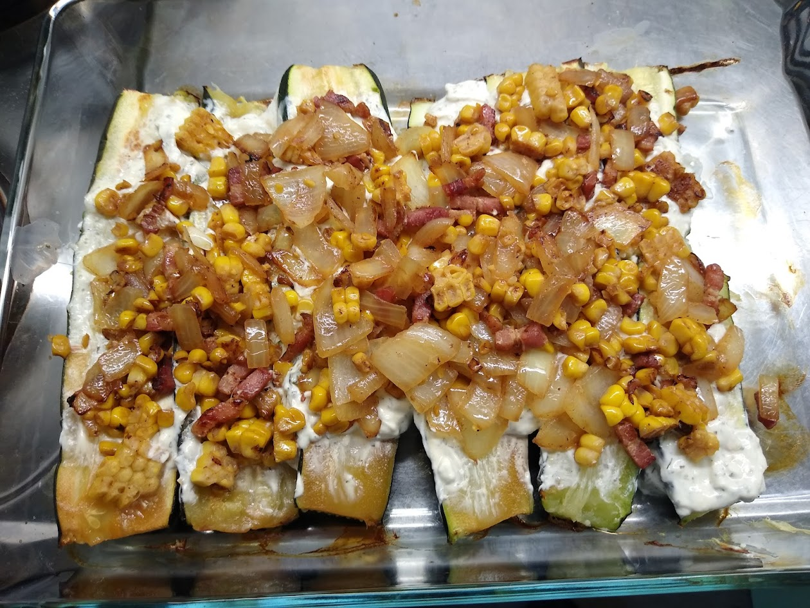

Baked Zucchini

Description:
Oven baked zucchini with a Frishkäse, onion, corn and bacon.
Ingredients:
- Zucchini: 2-4 piece(s)
- Onion: 1 piece(s)
- Corn: 1 can(s) or 2 piece(s)
- Bacon: 250 g
- Corn: 1 can or 2 piece(s)
- Frishkäse: As desired
- Salt & Pepper
Instructions:
- Cut the zucchini in half, place inside the oven for around half an hour.
- Heat oil in a pan, add the bacon.
- Chop the onion and fry in the pan until transparency.
- Bacon: 250 g
- Add the corn and cook for a while.
- When the zucchini is ready, take it out, season with salt and pepper.
- Spread the Frischkäse and put the other cooked ingredients on top.
Return to Home Page